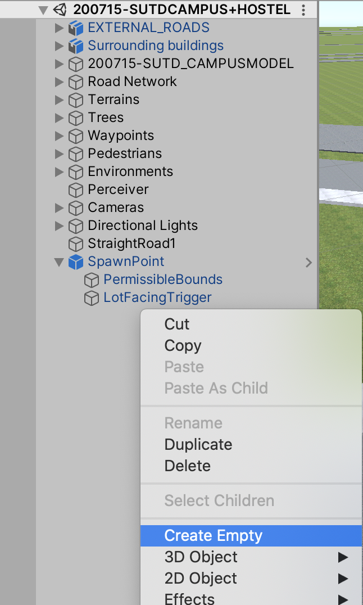
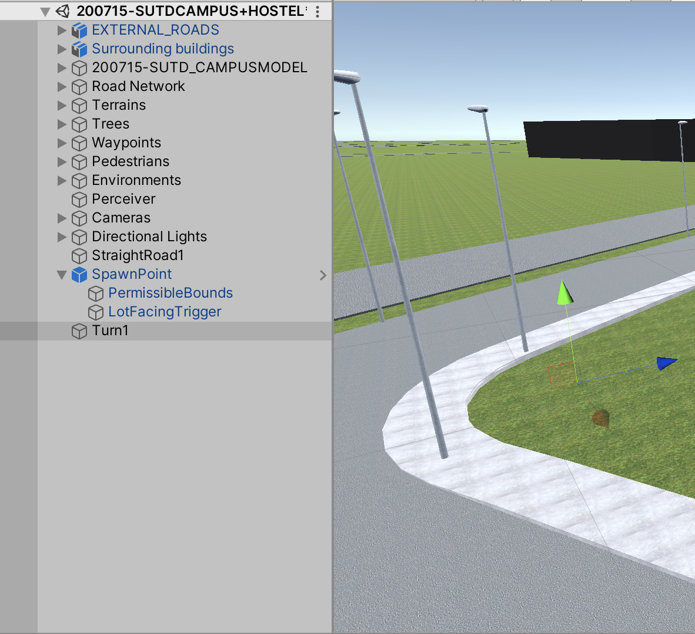
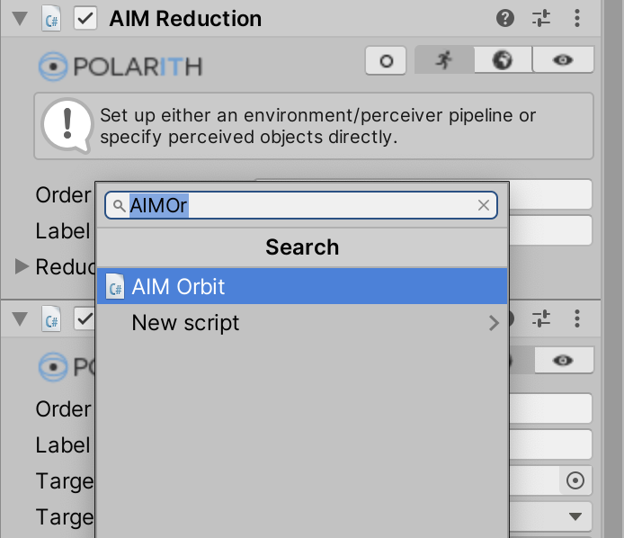
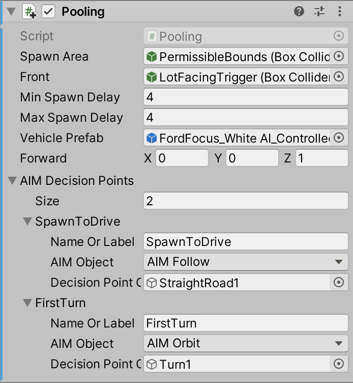
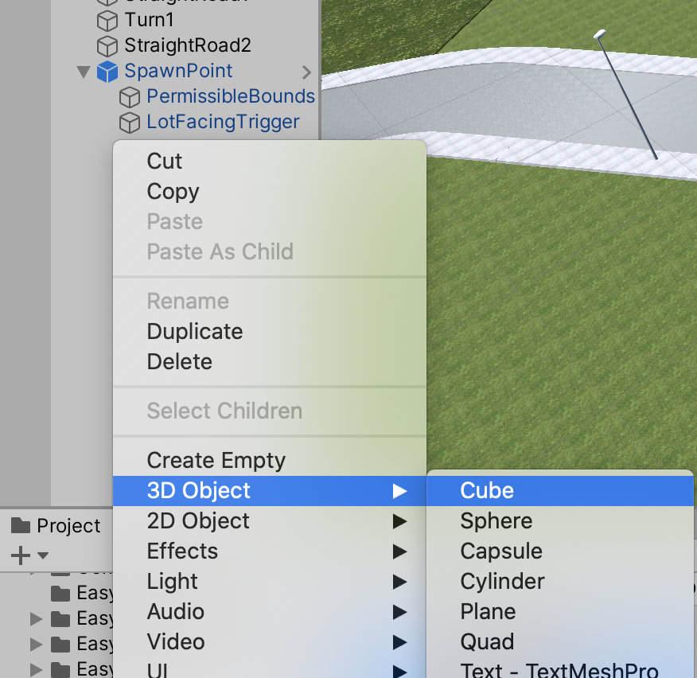
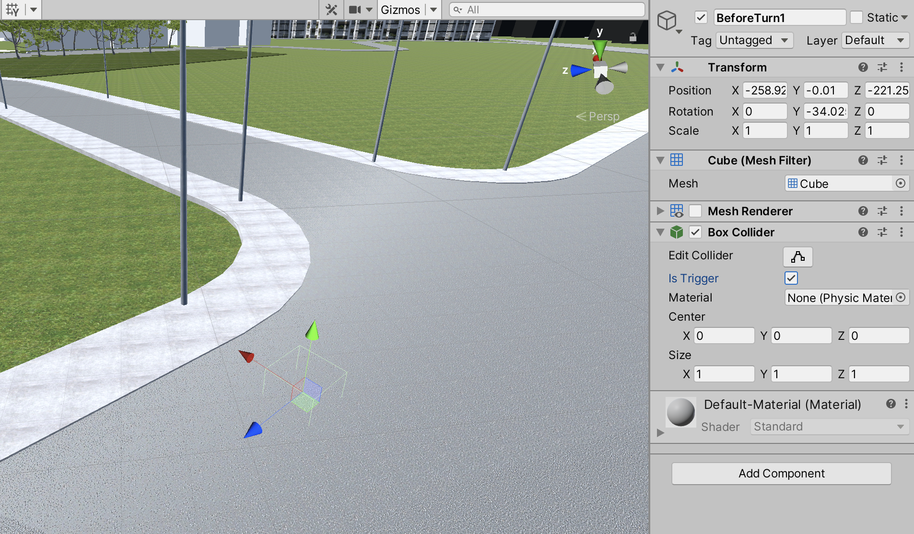
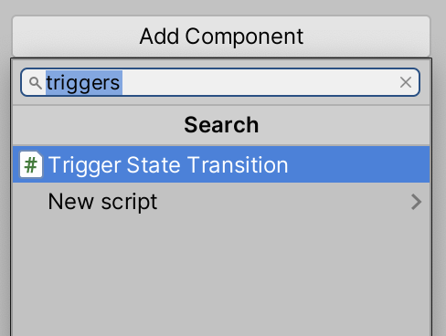

Before you start on this section, make sure that you have completed the previous section, Straight Line Movement.
Create an Empty GameObject
Drag it to the corner which the turn is at, and name it something distinct such as “Turn1”
Go to the AIController Prefab located in Assets > Vehicle Simulation > CarparkDriving. In the Inspector window, click Add Component, and add AIMOrbit
Click on the Running Man icon, and fill in the following accordingly:
Then, add the this Decision Point to the Spawn Point as an AIMOrbit object
Also, add this label to the Animator as an allowed behaviour
We also have to take into account the straight road that the vehicle will travel along after it has completed the turn. Hence, follow the exact same steps again to create the next AIMFollow behaviour
At this point, you should have the following:
However, there needs to have a trigger to allow the state to transit from one to another. Hence, we need to create these triggers.
Right click on the Hierarchy and create a new Cube 3D Object.
Drag it to the spot right before the turn is executed, and name it something you know. In addition, disable the mesh renderer as well as check the Is Trigger box.
Now, add the component “Trigger State Transition”
Since this is to change the state from 0 (Normal Driving) to 1 (Turning), the values will be the following:
Repeat steps 14-16, but this time drag the GameObject to the end of the turn. The values will be the following:
Finally, you have a complete turn. Remember to fine tune the turning in step 6 by adjusting the parameters, or shifting the trigger created in steps 12-17.